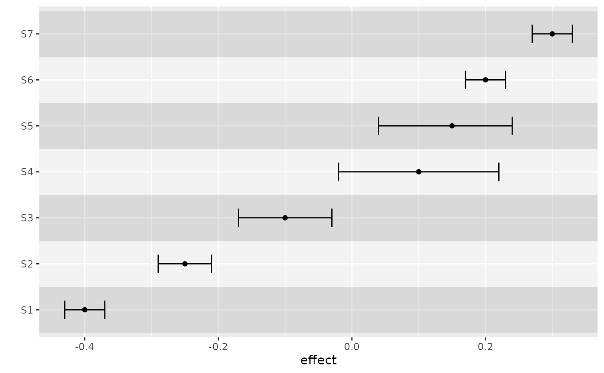

Creates colored background for panels of rainfall or forest plot.
Usage
background_panel(
g,
background_color = c("#69B8F7", "#FFFFFF"),
background_alpha = 0.3
)Examples
library(ggplot2)
df <- data.frame(
study = c("S1", "S2", "S3", "S4", "S5", "S6", "S7"),
item = as.factor(1:7),
effect = c(-.4, -.25, -.1, .1, .15, .2, .3),
lower = c(-.43, -.29, -.17, -.02, .04, .17, .27),
upper = c(-.37, -.21, -.03, .22, .24, .23, .33)
)
ggplot(data = df) |>
background_panel(background_color = c("grey", "white"), background_alpha = 0.4) +
geom_point(aes(y = item, x = effect)) +
geom_errorbar(aes(y = item, x = effect, xmin = lower, xmax = upper), width = 0.4) +
scale_y_discrete(name = "", breaks = 1:nrow(df), labels = df$study)
